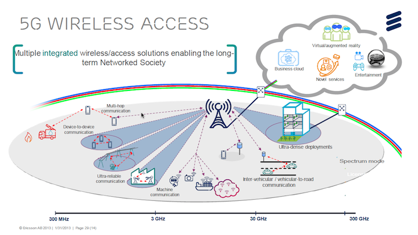

|
Project Work
Android Jetpack Compose and Kotlin Projects - Native Android Development
 |
Android Native Application Development.
|
Advanced Android Application Architecture - Using Jetpack Compose
|
|
Android Native Application Development.
|
Kotlin Development - Android
|
|
Kotlin Development - Android Native Application Development.
|
|
|
Kotlin Programming using Coroutines - Android Native Application Development.
|
|
|
Saving Data on Android - Data Storage using Android Native Application.
|
Service-Oriented Robotic Simulation Implementation.
|
|
Service-Oriented Robotic Simulation Implementation.
(August 2008 - February 2010) - ENSIBS + Lab VALORIA UBS FRANCE)
Robotics Studio allows developers to develop robotic applications which manage the sensors, actuators, and
the behavior of robots in their environment. The same application code is used both in the simulated robots
in a simulation environment and in real robots in real world environment. It has a Service-Oriented Architecture
(SOA), with services being designed and developed by Visual Programming Language (VPL) and direct
Visual C
Project description:
This project develops robotic simulation agents in Robotics Studio.
The application developed consists of the core specifications, these core specifications were developed by
following the Gaia multi-agent method.
There were several extensions developed of these specifications.
It manages the transport of goods between multiple warehouses in a closed environment.
The entities are mobile carrier agents, the loaderun-loader agents that loadun-load goods at warehouses.
The environment consists of the route (with its topology) and the goods to transport.
The mission consists of transporting all or a part of goods from one source (warehouse) towards a destination (warehouse).
The carrier agents discover the route topology and must construct and follow a route to reach their destination.
The project extensions implement the simulation scenarios, and then thus validate the specifications.
|
|
|
The extensions are:
-
The scalability of the number of carrier agents. We started from a static solution where we knew the number
of carrier agents at start, to a dynamic solution which allows the dynamic addition and removal of carrier agents
either with the help of a supervisor (HMI), or with the help of a service that allows the adaptation of the
number of carrier agents.
The evolution of the route. We passed from a solution where the topology of the route is known at the
beginning to a solution where the topology of the route evolves dynamically with the help of addition/deletion
of discrete portions of route with the help of a supervisor service.
The evolution of the number of the warehouses and mission. We pass from a solution where the number of
warehouses are static (i.e. known in advance) and the mission consists of transporting a part or all the goods
from one warehouse to another warehouse, to a solution which allows to introduce new warehouses
(placed at different portions of route via a supervisor service) and modification of carrier agent missions
to assure an equilibrium between the warehouses (i.e. our goal is the same quantity of goods in each warehouse)
The proposition of a strategy for the resolution of collisions between carrier agents.
|
Approach for the formal specification and verification of multi-agent robotic systems.
|
|
Approach for the formal specification and verification of multi-agent robotic systems.
(PhD Project - July 2007 - September 2010 - Lab VALORIA UBS FRANCE)
|
|
|
We have analyzed the development process of a robotic multi-agent system after classifying it in the
major phases of requirement specifications, verification specifications, architecture specifications,
and implementation.
|
An Architecture for Secure Video Streaming in Multicast environment.
 |
An Architecture for Secure Video Streaming in Multicast environment
(The Islamia University of Bahawalpur - 2012)
|
Design and development of a formal multi-agent information management system.
|
 |
Design and development of a formal multi-agent information management system.
HEC Grant 0.5 Million - Duration 10 months - (November - 2012)
Application of formal methods for the development of multi-agent based information management system
Design and development of a formal architecture for the Information management system
Implementation of this Information management system by using a multi-agent framework
The use of free open source multi-agent platform and softwares.
|
Luddo 3D - Design and development of 3D Ludo gameLuddo 3D - Design and development of 3D Ludo game.
|
|
Luddo 3D - Design and development of 3D Ludo gameLuddo 3D - Design and development of 3D Ludo game.
(August - 2013)
Luddo is very popular game in Pakistan. Internationally and nationally people play this game for entertainment.
Usually a square board, dice and some tokens are used in order to play this game.
We proposed an electronic version of the game in order to modernize the experience of playing Luddo game
in computers and smart phones. Four, three, or two players can play this game at a time.
We have proposed a single player gaming experience also; developed the electronic game and added
functionality of playing game with the computer player;
Moreover we have developed a Luddo game in a 3-Dimensional graphic environment using a 3D-graphics engine.
We are the first team to developed this 3D-Luddo game across the world.
|
|